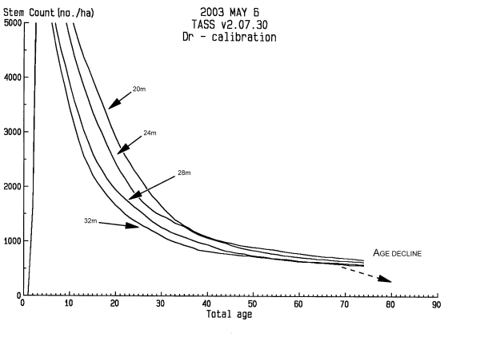

In this Topic Hide
Red alder was the first broadleaf (hardwood) species to be incorporated into both TASS and TIPSY. A number of unique issues resulted in inherent model limitations (outlined below). Key red alder growth and yield information is either incomplete or missing, and the confidence in specific model results directly relates to the quality of the available data.
The PSP (permanent sample plot) & EP (experimental plots) datasets used to calibrate TASS for red alder do not exceed site index (SI) 32 m @ BHAge 50 (Nigh and Courtin 1998). Projections of SI>32m are outside the range of the data. Projections for better sites default to 32 m Site Index Grouping (SIG) relationships (see Figure 1) because mortality and bole increment relationships do not exist.
There are enough red alder PSP & EP data to show trends and relationships, but insufficient data to provide precise statistical relationships. The test of "reasonable" model behaviour is recommended in applying model output.
Red alder calibration focused on fitting TASS tree & stand level relationships to primarily British Columbia data. Nigh and Courtin 1998 site index curves were used during calibration (approved BC MOF curves). Select the Notes feature in TIPSY's Curve Specifications dialog to see more information on these site index curves.
For red alder calibration, TASS top height relationships were modified to account for stand age, and changes in mortality with site productivity. Analysis of the PSP and EP dataset suggested:
Unlike most coniferous data, red alder stand mortality was found to be affected by age and site quality. To simulate age-related stand break-up, TASS random mortality was increased after stand age 70 year, resulting in complete stand mortality by 85-90 years depending on site productivity. We term this 'age decline'. We established four site index groups (SIGs) to simulate observed mortality relationships across sites (SIGs: 20m, 24m, 28m, 32m ±2m range, see Figure 1).
Bole increment (BI) was also affected by age in interaction with site quality. After increasing TASS stand mortality at stand ages > 70, TASS still over-predicted volumes in older stands. Our individual tree stem analysis data ranged from 4 to 70 years and an interim calibration scalar was needed to mimic available PSP data trends until additional tree data can be collected. This assumes that efficiency of alder BI declines with age. Field observations of alder leaf area index (LAI) indicate an inherent LAI sensitivity to stress (drought and disease) and old age. LAI is directly correlated with BI.

FIGURE 1. TASS Site Index Groupings (SIGs) - Red Alder Density
TASS allows for only one static estimate of crown form. Our data suggest that red alder has a changing crown form related to age and competitive status. Vigorous young alder usually have a conical crown shape or profile which changes to more of a spherical form as height growth declines and stands thin at older ages. In other words, crown form is dynamic and analogous to that of an opening umbrella. For TASS model behaviour this is extremely important since crown form or shape determines crown volume that in turn affects diameter growth and allows spatial interaction between trees, crown competition or tree occupancy.
A TASS crown form for alder was chosen that simulated the average red alder in the tree level dataset. The TASS static crown profile represents an average naturally regenerated red alder of 35-45 years of age. The implications are that TASS likely over-estimates crown volume at young ages and under-estimates crown volume at older ages. The development of an algorithm for more realistic and dynamic crown forms is in progress.
TASS defines top height as the average height of the 100 largest diameter trees per hectare. It can be shown that statistically top height of a given stand will increase with increasing initial density. This is sometimes referred to as "genetic upgrade". Within normal managed stand densities the increase in top height is small. However, the difference between a naturally regenerated stand density of for example, 20,000 sph and a plantation with 1200 sph can result in a significant top height and concurrent volume increase. This affect is difficult to document without rigorous long term field research. Increases in top height with density have been observed in red alder (Dave Hibbs pers. com. 2000) and some conifers (Jim Goudie pers. com. 2003). However, a height vigor adjustment (HVA) was developed which forces TASS top height trees to follow the site index curve regardless of initial density. This simplifying convenience allows TASS growth and yield information to be easily interpolated across all top heights in the TIPSY database. For a TASS user, it is important to specify whether the HVA is turned ON or OFF and to understand the implications of the choice.
Unique changes in TASS architecture were required for red alder calibration. Changes to TIPSY were also necessary to allow interpolation across SIGs for density and BI relationships. A number of economic issues have also been encountered that require discussion. Be aware that, in order to allow maximum flexibility in TIPSY, alder uses many default values of other species.
The TIPSY database was restricted to SI 20-32m due to the TASS red alder SIGs. An interpolation routine was developed allowing a seamless transition between the four SIGs. The existence of the SIGs is transparent to the user.
TIPSY pre-commercial thinning (PCT) simulations are available only at top height 6.0m, which is consistent with other coastal species. TASS projections should be requested for greater flexibility in PCT and CT simulations. Pruning is available only through TASS.
TIPSY allows you to create a multiple species stand composition for all conifer species. This option is not allowed with red alder because alder is a short-lived species. Both TASS and TIPSY are unable to simulate species interaction as an alder stand breaks up.
Since red alder decays very quickly, the default decay rates for coarse woody debris should be adjusted.
Conifer lumber recovery information is based on 2-inch lumber grades. However, hardwood-grading rules are extremely complex and normally based on 1-inch material. Therefore, TIPSY red alder contains a 1-inch database. However, a 2-inch database from similar TASS log sawmill simulations is available upon request. This allows you to compare alder product yields with conifers or other hardwoods.
Since about 1996, accurate log values and lumber recovery statistics for alder have been unavailable. The Vancouver log market lists alder as only U, X, and Y grades which are low value logs. There appears to be limited competition in BC for alder logs since there is only one alder sawmill in the province (as of 2003). Some alder log prices are available from Washington and Oregon. However, similar limited competition concerns have been voiced in the US as well. As a result, FAN$IER default economic values are presently based on softwoods (white spruce).
TIPSY's red alder log tables are based on 2.5 m sawlog length. Any log that doesn't meet the criteria is put in the pulp category.
To facilitate TIPSY database interpolation routines, TASS runs were configured with a specific set of parameters. The parameters are:
HVA turned ON
Age decline turned OFF
Planted age set to zero
Regeneration delay set to zero.
Internal TIPSY routines interpolate across site indices and adjust for age decline, planted age, and regeneration delay. As a result, TASS and TIPSY output may be similar but not identical.
In TIPSY, an Age Decline Custom OAF is enabled as the default. The user can easily turn it off and create a new Custom OAF to replace it.
____________________________________________________________________________________ |
Model parameter |
TASS |
TIPSY |
Comments |
____________________________________________________________________________________ |
HVA (height vigour adjustment) |
ON / OFF |
ON (in TASS) |
|
Age decline (> 70 years) |
ON / OFF |
Age decline OAF, default is ON |
Users can change age decline Custom OAF |
SIG (site index group) |
USER CHOICE |
SEAMLESS INTERPOLATION |
SIGs invisible to TIPSY users |
SI curves |
USER CHOICE |
USER CHOICE |
Default: Nigh & Courtin 1998 |
Planting stock age |
USER CHOICE |
N/A |
|
USER CHOICE |
USER CHOICE |
TIPSY Default: 26 cm (1 yr-old stock) |
|
USER CHOICE |
USER CHOICE |
|
|
USER CHOICE |
N/A |
|
|
Economics (FAN$IER) |
NO |
N/A |
Limited data, see Red Alder in FAN$IER Help |
LUMBER NOT WITHOUT ADDITIONAL SAWMILL SIMULATIONS |
YES |
TIPSY reports 1-inch lumber |
|
Pruning |
USER CHOICE |
N/A |
|
USER CHOICE |
@ 6.0 m top ht only |
|
|
USER CHOICE |
N/A |
|
|
NO |
USER DEFINED |
No TIPSY default response |
|
NO |
USER DEFINED |
No TIPSY default |
____________________________________________________________________________________ |